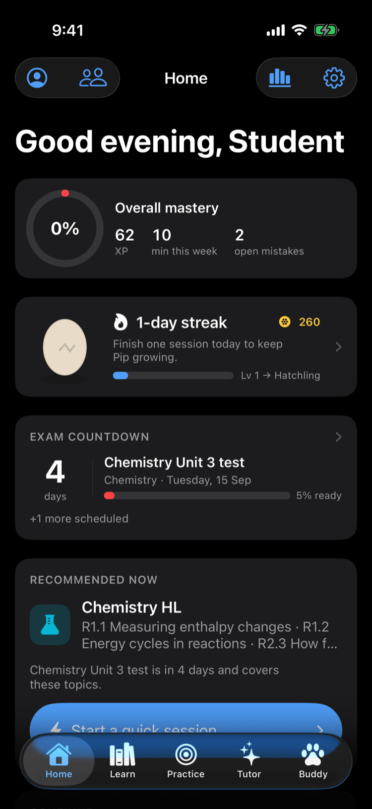
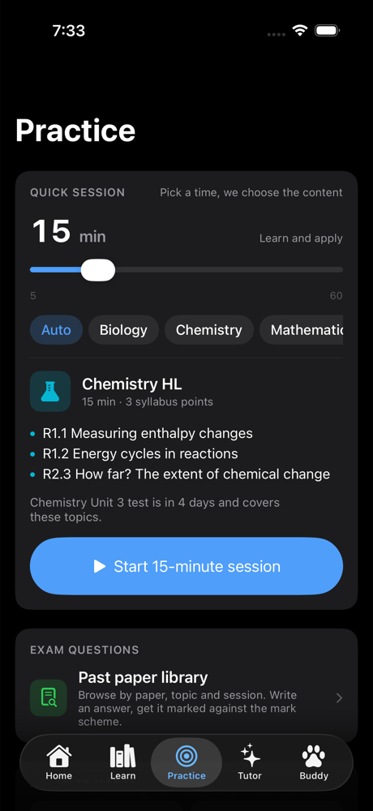
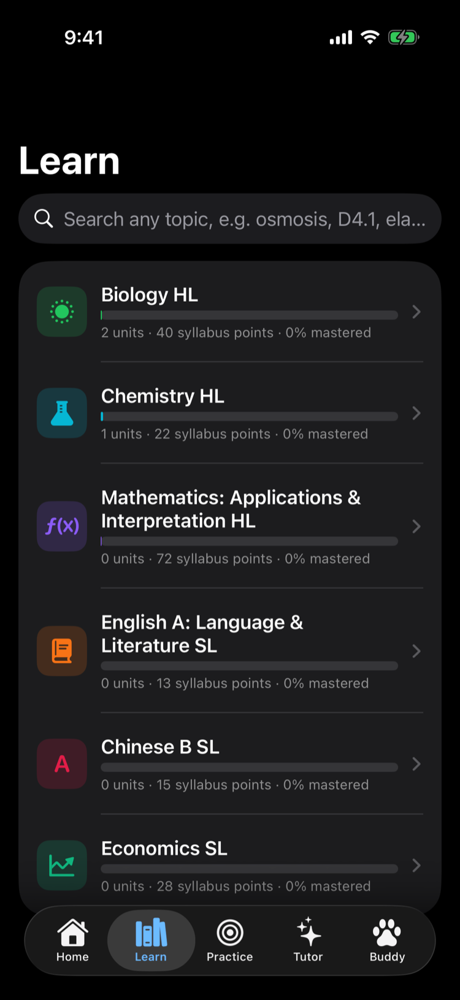
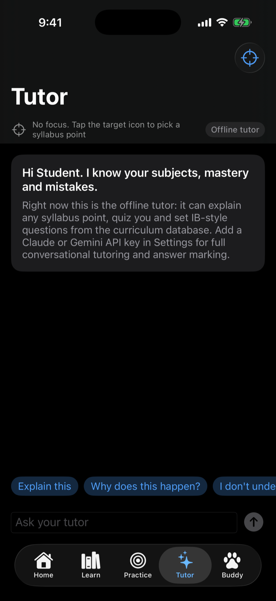
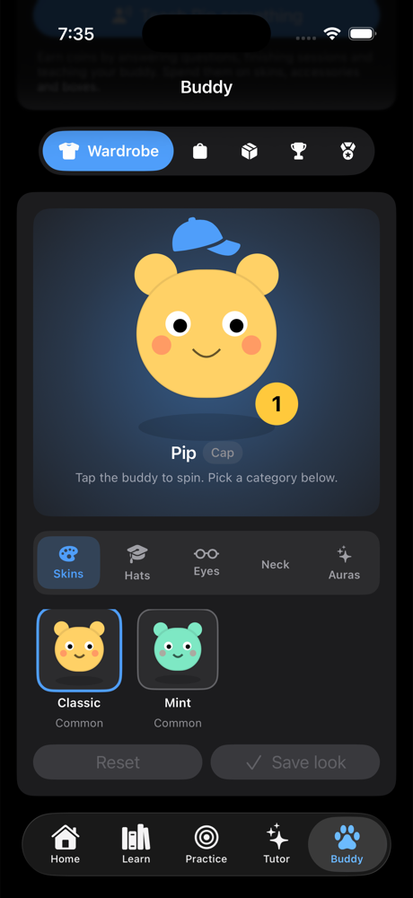

Tell Syllabo how many minutes you have. It builds a session from your weakest syllabus points, your open mistakes and the topics due for review, marks what you write, and moves on.
iPhone, iPad and Mac. Free. No ads, no tracking, your data stays on your device.

Every IB Diploma subject offered at UWCSEA East, HL and SL
Every question, flashcard and lesson is tagged to an official syllabus point, so the app always knows what you have covered, what you keep getting wrong and what your next test is on.
Slide from 5 to 60 minutes. Syllabo sequences a warm-up, a lesson card, recall, application and an exam-format question, weighted towards what is weak and what is tested soon. Flashcards, MCQ, written questions, concept review, exam practice, or teach your buddy.

Inside any subject, type "enthalpy" or "3.1" and go straight to the lesson, questions, MCQ or cards for that exact point.

Paper 1, Paper 2 and essay-plan questions with command terms and mark allocations. Write your answer, see the marks you earned point by point, then ask the tutor what you missed. Bookmark any question into folders you name.
Explain this, quiz me, mark this. It sees your subject, syllabus point, mastery and mistakes. Works offline; connect Claude or Gemini for full conversation.

Answer questions, earn coins, hatch and dress a buddy that grows with your streak. Weekly leaderboard with friends, medals for the milestones.

Set up once. From then on the app decides what to show you, and you decide how long.
Pick your six from the full UWCSEA East list. Add your school's units and your upcoming tests with the topics they cover.
In a taxi, before dinner, between lessons. Slide to the time you have and start. Or search a concept and drill just that.
Every answer updates a spaced-repetition score per syllabus point. Mistakes stay open until you resolve them. Exams pull their topics forward.
Syllabo is free. The optional AI tutor runs on your own API key, so you pay the provider directly and only for what you use.
The app ships original questions written in IB paper format with mark schemes. Real papers are IBO copyright, so they are not bundled. If your school gives you access to past papers, the included import tool converts a paper plus mark scheme into the app in one command, and they appear with their session, paper and question reference.
Yes. Everything except the AI tutor is on your device. The offline tutor still explains, quizzes and sets questions.
On your device only. There are no Syllabo servers. Accounts, mastery, mistakes, notes, friends and settings are all local, and deleting the app deletes them.
Every UWCSEA East subject is selectable with its official topic outline. Biology, Chemistry, Maths AI, Economics, English A Language and Literature and Chinese B have detailed syllabus points, questions and glossaries; more are being added.
No. "International Baccalaureate" and "IB" are trademarks of the International Baccalaureate Organization, which does not endorse this app.
Syllabo is coming to the App Store for iPhone, iPad and Mac. Until then, email to join the TestFlight.
Request TestFlight access